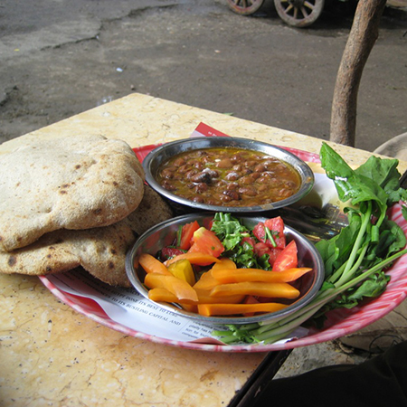

I grew up in a bit of an odd home. My parents are immigrants from Egypt, and although I ate a lot of Egyptian food growing up, my mother also liked to experiment with food from other cultures. I've been meaning to get her recipes down and organized in one place for a while, so here they are!
Foule
Foule (fava beans) is a very traditional Egyptian dish, normally eaten with thick pita bread for breakfast.

2 C dry fava beans
1 T white vinegar
2-3 t cumin
juice of 1 lime
salt to taste
olive oil to taste
In a slow cooker, Submerge the beans by an inch to two of water.
Cover and turn cooker on high overnight (about 8-12 hrs).
In the morning, check on doneness. Top layer may be black. You can mix it in and cook longer or discard.
If done, add salt, vinegar, lime juice.
When you serve it up add the cumin, adjust lime juice and add oil.